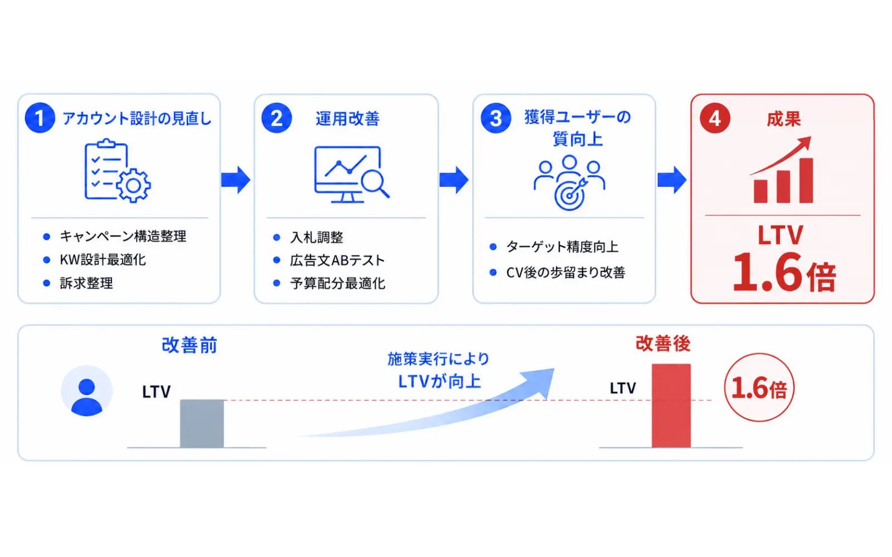

この記事でわかること
- 東京に本社を置く広告運用代行会社5社の比較表（LnXも同じ粒度で掲載）
- 5社の特徴・向いているケース・注意点（公式サイトとサービスページのリンク付き）
- 料金・最低出稿額・契約期間が公式ページに載っているかの一覧
- 見積もりを依頼する前の質問リストと、起きやすい失敗パターン
東京の広告運用代行を探すとき、先に決めておくこと
「広告運用代行 東京」で検索すると、会社の所在地ごとに区切った一覧記事が多数見つかります。ただ、広告運用はオンラインで完結する業務が中心で、本社が東京にあること自体が運用成果を左右するわけではありません。それでも東京の会社に絞って探す人が多いのは、打ち合わせを対面でもできる、商圏が東京で土地勘のある相手に任せたい、といった実務上の理由があるためだと考えられます。
この記事を書くにあたり、地域別にまとめた比較記事を3本開いて見出しを確認しました。多くは「会社の住所」「強みの一言紹介」「費用感」「選び方（予算・期間・担当者体制）」を並べる構成です。一方で、料金・最低出稿額・契約期間が各社の公式ページに実際に載っているかどうかまで一覧にしたものは見当たりませんでした。見積もりを取る前の段階で、どの会社が条件を公開しているかが分かれば、問い合わせ先の絞り込みはかなり楽になります。
そこで本記事では、東京に本社を置く広告運用代行会社4社と当社LnXの計5社を、公式ページで確認できた内容だけで並べました。公式ページに記載がなかった項目は「公開なし」と書き、推測では埋めていません。
比較の方法と、見る6項目
比較にあたっては、各社の公式サイトのトップページ、会社概要、広告運用サービスのページを実際に開き、2026年10月9日時点の記載を確認しました。見た項目は次の6つです。
- 本社所在地：東京都内であること。区まで確認できたものだけを載せています。
- 対応媒体：公式ページに媒体名が書かれているか。
- 料金（手数料・初期費用）：金額や料率が書かれているか。
- 最低出稿額：広告費の下限が書かれているか。
- 契約期間：最低契約期間や解約条件が書かれているか。
- 制作・インハウス支援の扱い：LPやクリエイティブ制作、社内運用の支援を提供しているか。
掲載する会社は、東京都内に本社があり、広告運用代行を事業として掲げ、公式ページを実際に開いて内容を確認できた会社に限りました。公式サイトの閲覧が制限されていて内容を確認できなかった会社は、載せていません。また、掲載順は五十音順で、順位ではありません。
東京の広告運用代行おすすめ5選：比較表
まず5社を1つの表にまとめます。公式ページに記載がない項目は「公開なし」です。
| 会社名 | 本社所在地 | 対応媒体（公式記載） | 料金・最低出稿額 | 契約期間 |
|---|---|---|---|---|
| アナグラム株式会社 | 渋谷区千駄ヶ谷 | Google・Yahoo!・Meta・X・Criteo・TikTok・Microsoft広告の正規代理店。Amazon Adsのベリファイドパートナー | 公開なし | 公開なし |
| 株式会社デジタリフト | 渋谷区神宮前 | 少額向け「LIFT+」は検索型広告のみ（Google・Yahoo!・Microsoft）。他媒体は別途相談 | LIFT+：初期費用0円、運用手数料1万円〜。最低出稿額は公開なし | LIFT+：6か月 |
| 株式会社デジタルアイデンティティ | 渋谷区恵比寿南 | Google・Yahoo!・Microsoft・Meta・X・YouTube・LINE・TikTokなど多数を列記 | 公開なし（資料請求で確認） | 公開なし |
| デジタルアスリート株式会社 | 新宿区西新宿 | リスティング・Meta・Instagram・TikTok・YouTube・Taboola・Yahoo!・LINE・Xなど11媒体を列記 | 公開なし。制作費無料は月額予算250万円以上が条件 | 公開なし |
| LnX合同会社 | 渋谷区恵比寿西 | Google・Yahoo!・Meta・TikTok・X・LINE・YouTube・GDN・YDN | 広告費の20%（50万円未満は10万円／税込）。最低出稿額なし | 最低6か月 |
※ 各社の情報は2026年10月9日に公式ページを確認したものです。料金・支援範囲は改定される可能性があるため、発注前に必ず各社にご確認ください。順位付けは行っておらず、掲載順は五十音順（LnXのみ末尾）です。公式ページに記載がなかった項目は「公開なし」としており、推測では埋めていません。
表を見て最初に気づくのは、5社のうち具体的な金額を公式ページに載せているのは、少額向けサービスを別に用意しているデジタリフト（LIFT+）と当社だけという点です。これは各社の姿勢の優劣ではなく、料金が業種・媒体数・業務範囲で変わるため個別見積りにしている会社が多い、という広告運用代行の一般的な事情によるものと考えられます。ここからは1社ずつ、公式サイトで確認できた特徴を整理します。
アナグラム株式会社
公式サイト：https://anagrams.jp/ ／ サービス掲載ページ：広告運用代行（公式トップページのサービス欄）
本社は東京都渋谷区千駄ヶ谷にあります。公式ページには、広告運用代行としてリスティング広告の運用、SNS・動画プラットフォーム広告、動画広告、データフィード広告が並び、Google広告・TikTok広告・Amazon広告の運用についても記載があります。Google、Yahoo!、Meta、X、Criteo、TikTok、Microsoft広告の正規代理店であり、Amazon Adsのベリファイドパートナーであることも公式に明記されています。
運用代行のほかに、広告アカウントの分析や運用型広告セミナーといったインハウス支援、クリエイティブ・ランディングページの制作支援、Web解析コンサルティングも事業として掲げています。つまり「運用を丸ごと任せる」だけでなく「社内で運用できる状態を目指す」使い方も選べる会社です。料金と契約期間は、確認した範囲では公開されていませんでした。
向いているケース：複数の媒体を使い分けたい、将来は社内運用に切り替えたいので支援の仕方も相談したい。
注意点：料金・最低出稿額・契約期間は公式ページで確認できないため、問い合わせて見積もりを取る必要があります。
株式会社デジタリフト
公式サイト：https://digitalift.co.jp/ ／ サービスページ：少額広告運用「LIFT+」、ソリューション一覧
本社は東京都渋谷区神宮前です。事業として、広告配信の設計から運用・レポートまでを一貫して行うトレーディングデスク事業、デジタルマーケティングのコンサル事業、チャットボット事業を掲げています。広告運用に関連するメニューとして、デジタル広告運用、アフィリエイト運用、SNSアカウント構築・運用代行、インフルエンサーマーケティングが公式に並んでいます。
この5社の中で目を引くのは、少額運用に特化した「LIFT+」のページに条件が具体的に書かれていることです。初期費用は0円、運用手数料は1万円から、対象は検索型広告（Google検索・Yahoo!検索・Microsoft検索）のみで、他の媒体は別途相談とされています。契約は6か月の縛りで、途中解約には違約金が設定されており、支払いは事前決済（当月30日までに翌月分）です。最低出稿額はこのページには記載がありませんでした。
向いているケース：検索広告だけを少額から試したい。料金や解約条件を事前に読み込んだうえで判断したい。
注意点：LIFT+は検索型広告のみが対象です。SNS広告なども含めたい場合は別のメニューになり、条件は個別確認が必要です。6か月縛りと違約金の設定があるため、解約条件は契約前に必ず読んでください。
株式会社デジタルアイデンティティ
公式サイト：https://digitalidentity.co.jp/ ／ サービスページ：AD/デジタル広告
本社は東京都渋谷区恵比寿南で、創業は2009年、現在の法人はホールディングス化に伴い2017年に設立されたと会社概要に記載されています。広告サービスのページでは、対応媒体としてGoogle広告（リスティング・ディスプレイ）、Yahoo!スポンサードサーチ、YDN、Microsoft広告、Meta広告、X広告、YouTube広告、LINE広告、TikTok広告のほか、アドネットワークや求人系の媒体まで数多く列記されています。
支援範囲としては、リスティング広告の運用に加えて、LPO・LP改善、バナーや動画広告のクリエイティブ改善、アフィリエイト広告のASP選定と条件交渉、広告アカウントの無料診断、縦型ショート動画の制作が書かれています。運用だけでなくクリエイティブと改善まで含めて見てほしい場合の選択肢です。料金・最低出稿額・契約期間はサービスページに記載がなく、資料のダウンロードか問い合わせで確認する形でした。
向いているケース：媒体を広く扱える会社に、LPやクリエイティブの改善まで含めて相談したい。
注意点：料金・契約条件は公式ページで確認できません。資料請求や問い合わせで条件を確かめる必要があります。
デジタルアスリート株式会社
公式サイト：https://ppc-master.jp/ ／ 会社概要：https://ppc-master.jp/company/
本社は東京都新宿区西新宿で、2011年に「株式会社リスティングプラス」として設立され、2022年に現在の社名へ変更したと会社概要に記載があります。公式トップページの広告運用代行の欄には、リスティング広告、Google広告、Meta広告、Instagram広告、TikTok広告、YouTube広告、Taboola広告、Yahoo!広告、LINE広告、X広告、アドテストの11媒体が並びます。LP制作、ホームページ制作、動画制作、YouTubeチャンネル運用といった制作サービスと、社内のWebチームを支援するインハウス支援も提供しています。
条件面では、「制作費無料は月額予算250万円以上のお客様に限ります」と公式に書かれています。また、月額予算100万円〜1,000万円のお客様が多いとも記載があり、ある程度の予算規模を想定した運用体制であることがうかがえます。料金体系・最低出稿額・契約期間は確認できませんでした。
向いているケース：月額の広告費がある程度確保でき、運用とLPなどの制作をまとめて相談したい。
注意点：制作費無料の条件が月額予算250万円以上と明記されています。それ未満の予算の場合の扱いは、問い合わせて確認する必要があります。
LnX合同会社
公式サイト：https://lnx.co.jp/ ／ サービスページ：Web広告運用代行（広告運用LP）
当社です。他社と同じ粒度で書きます。本社は東京都渋谷区恵比寿西です。運用手数料は広告出稿金額の20%で、出稿金額が50万円に満たない場合は10万円（税込）を頂戴します。広告費の最低出稿額は設けていません。最低契約期間は6か月で、期間内に解約された場合はLP制作費（お見積書記載の通常料金）をご請求する条件があります。バナー・動画などのクリエイティブ制作費は手数料に含まれず、別途お見積りです。
対応媒体は、リスティング広告（Google／Yahoo!）、SNS広告（Meta／TikTok／X／LINE／YouTube）、ディスプレイ広告（GDN／YDN）です。広告運用LPからお申し込みのBtoC事業者様には、受け皿となるLPを無料で制作するキャンペーンを実施しています（各月先着3社・最低契約6ヶ月ほか適用条件あり）。
向いているケース：広告が初めてでLPもまだない。料金を事前に把握したうえで、少額から試したい。
注意点：運用手数料には下限（出稿額50万円未満は月10万円）があり、最低契約期間は6か月です。アナグラムのように媒体の正規代理店資格を前面に出した体制や、デジタルアスリートのように大きな予算規模を想定した体制とは、得意な領域が異なります。他社の提案書や見積もりを並べた状態でのご相談も歓迎です。
公式ページで確認できた項目の一覧
比較表の内容を、「公式ページに書いてあったかどうか」だけで整理し直します。見積もりを依頼する前に、どの会社に何を聞く必要があるかを把握するための表です。
| 会社名 | 金額・料率 | 最低出稿額 | 契約期間 | 制作・インハウス支援 |
|---|---|---|---|---|
| アナグラム | 公開なし | 公開なし | 公開なし | あり（制作支援・インハウス支援） |
| デジタリフト | LIFT+のみ公開 | 公開なし | LIFT+のみ公開 | 公開なし（SNS運用代行等のメニューは記載あり） |
| デジタルアイデンティティ | 公開なし | 公開なし | 公開なし | あり（LP・クリエイティブ改善、動画制作） |
| デジタルアスリート | 公開なし | 公開なし | 公開なし | あり（LP・動画制作、インハウス支援） |
| LnX合同会社 | 公開 | 公開（下限なし） | 公開 | あり（LP制作・改善。クリエイティブは別見積り） |
公開なしの項目が多いのは自然なことで、情報を出していないこと自体を問題視する必要はありません。大切なのは、公開されていない項目を、問い合わせの段階で漏れなく聞くことです。次の章で、聞くべき質問をまとめます。
条件別の選び方
5社を比較した結果を、依頼側の条件に引き直すと次のようになります。いずれも「この条件ならこの会社が最適」という断定ではなく、問い合わせ先を絞るための目安です。
- 検索広告だけを少額から試したい：デジタリフトのLIFT+のように、対象を絞った少額向けメニューを持つ会社から検討する。
- 広告に加えてLPやクリエイティブの改善も任せたい：制作や改善を事業として掲げている会社（デジタルアイデンティティ、デジタルアスリート、LnXなど）を検討する。
- 将来は社内で運用したい：インハウス支援を事業として掲げているアナグラム、デジタルアスリートなどに、支援の進め方を聞く。
- 広告が初めてで、料金を先に把握したい：料率や契約期間を公式ページに出している会社から検討する。
- 月額予算がある程度大きい：デジタルアスリートのように、予算規模に応じた条件を明示している会社も候補になる。
東京の事業者が広告を出すときに意識したい点
運用代行会社の所在地とは別に、広告を出す側の事業所が東京にある場合は、配信設計の面で考えておきたい点がいくつかあります。以下は、当社が実務で見ている傾向であり、統計的な裏付けのある数値ではありません。
1つ目は、配信エリアの切り方です。店舗型のビジネスなら、「東京都」全体ではなく、来店できる沿線や区に絞ることで、無駄な配信を減らせます。2つ目は、同業の広告主の多さです。東京は同じ商材の広告主が集まりやすく、リスティング広告ではクリック単価が上がりやすい傾向があると感じています。そのため、ただ入札を上げるのではなく、キーワードの絞り込みやLPの改善で受け皿の質を上げる設計が重要になります。3つ目は、対面での打ち合わせの必要性です。運用の定例はオンラインで十分な場合が多く、対面が必要なのは初回のヒアリングや、店舗・オフィスの現場確認が必要な場合に限られることが多いです。
こうした点を考えると、「東京の会社に頼む」ことよりも、自社の商圏とビジネスモデルを理解して配信設計を提案できるかどうかを、問い合わせ時に確認することのほうが大切です。
見積もりを依頼する前の質問リスト
東京の広告運用代行会社に問い合わせるときの質問リスト
【料金・条件】
- 手数料は広告費に対する料率か、固定額か。下限額はあるか
- 初期費用、LP・バナー・動画などの制作費は別途かかるか
- 最低出稿額と、最低契約期間はあるか
- 途中解約したときの扱い（違約金・制作費の請求）はどうなるか
【体制・進め方】
- 担当者は誰で、何件を同時に担当しているか
- 定例の頻度と形式（オンライン・対面）はどうなるか
- 自社の業種・規模に近い運用の経験はあるか
【資産】
- 広告アカウントは自社名義で開設・保有できるか
- 契約終了後に、アカウントや配信データを引き継げるか
なお、契約書の条項そのもの（とくに途中解約時の違約金や、広告アカウントの帰属）の解釈については、個別の判断が必要になります。具体的な契約内容については、弁護士等の専門家にご確認ください。
東京の会社選びで起きやすい失敗パターン
| パターン | 何が起きるか | 事前に防ぐ質問 |
|---|---|---|
| 所在地だけで会社を絞ってしまう | 自社の商材や予算規模に合わない会社が候補に残る | 「自社と近い業種・予算規模での運用実績を教えてもらえますか」 |
| 料金が公開されていない会社と、公開している会社を金額だけで比べる | 手数料・制作費・最低契約期間が揃っておらず、実質の負担を見誤る | 「想定広告費と業務範囲を伝えるので、内訳付きの見積もりをもらえますか」 |
| 少額向けメニューの対象媒体を確認しない | 検索広告のみ対象で、SNS広告まで含めたいときに別料金になる | 「このプランで運用できる媒体と、できない媒体はどれですか」 |
| 解約条件を読まずに契約する | 想定より早く止めたいときに違約金が発生する | 「契約期間の途中で解約した場合、何が請求されますか」 |
LnXの見解
「広告運用代行 東京」という検索の背景には、近くの会社に頼みたいというより、「安心して任せられる相手を、顔が見える範囲で探したい」という気持ちがあるように感じています。ただ、今回5社を公式ページで比較して分かったのは、東京に本社がある会社同士でも、少額の検索広告に絞った会社、予算規模を想定した会社、媒体の正規代理店資格を前面に出した会社と、得意な領域がはっきり分かれているということです。
だからこそ、所在地は出発点として使い、実際の判断は「料金と契約条件が事前に分かるか」「自社の予算と商材に合った体制か」で行うのが現実的です。当社の運用手数料は広告出稿金額の20%（出稿額が50万円に満たない場合は10万円／税込）、最低契約期間は6か月、広告費の最低出稿額は設けていません。この条件は広告運用LPにすべて書いています。
当社は、広告費の多寡や業種を問わず、配信の設計だけでなくLP・計測環境まで含めて見ることを重視しています。たとえば、月額広告費が1,000万円規模のリスティングアカウントで、広告グループを期待LTVの高・中・低に分けてtCPAを個別に最適化し、4か月でLTVを1.6倍にした事例があります。

この数値は上場人材会社のリスティング広告での結果であり、他の業種・媒体で同じ成果を保証するものではありません。どの会社に依頼する場合でも、まず複数社の見積もりと提案を同じ条件で並べてから判断することをおすすめします。当社へのご相談は無料で、その場での契約はお願いしていません。
よくある質問
Q東京の広告運用代行会社を選ぶとき、本社の所在地は重要ですか？
広告運用は基本的にオンラインで進められるため、所在地が運用成果を直接左右するわけではありません。ただし、初回のヒアリングや店舗・オフィスの現場確認を対面で行いたい場合は、移動しやすい場所にあることが利点になります。この記事では、公式ページで本社が東京都内にあると確認できた会社を掲載しています。
Q5社のうち、料金を公式ページで公開している会社はありますか？
今回の確認では、デジタリフトの少額運用サービス「LIFT+」（初期費用0円、運用手数料1万円〜）と、当社LnX（広告費の20%、50万円未満は10万円／税込）の2つでした。アナグラム、デジタルアイデンティティ、デジタルアスリートは、確認できた公式ページに金額や料率の記載がなく、問い合わせでの確認が必要です。
Q少額から広告運用を依頼できる会社はありますか？
デジタリフトのLIFT+は検索型広告に絞った少額向けのサービスで、運用手数料は1万円からとされています。当社LnXは広告費の最低出稿額を設けていませんが、運用手数料には下限があり、出稿額が50万円に満たない場合は10万円（税込）です。どちらも最低契約期間があるため、期間と解約条件を契約前に確認してください。
Q比較表の会社の中で、どこがおすすめですか？
予算規模、使いたい媒体、LPなどの制作が必要かどうかで変わるため、一概には言えません。この記事では順位を付けず、公式ページで確認できた内容を1社ずつ整理しています。月額の広告費と、運用してほしい媒体を先に決めてから、比較表と各社の解説を照らし合わせてください。
Q見積もりを依頼するときは、何社くらいに声をかければよいですか？
目安として3社前後に、同じ条件（想定広告費、使いたい媒体、制作が必要かどうか）を伝えて見積もりを取ると、比較しやすくなります。条件が揃っていないと、手数料・制作費・最低契約期間の前提が異なる見積もりが並んでしまい、金額だけでは判断できなくなります。
Q契約前に最低限確認しておくべきことは何ですか？
料金体系（手数料の料率と下限、制作費の扱い）、最低出稿額、最低契約期間と解約時の扱い、広告アカウントの名義の4点です。契約書の条項の解釈など個別の判断が必要な部分は、弁護士等の専門家にご確認ください。